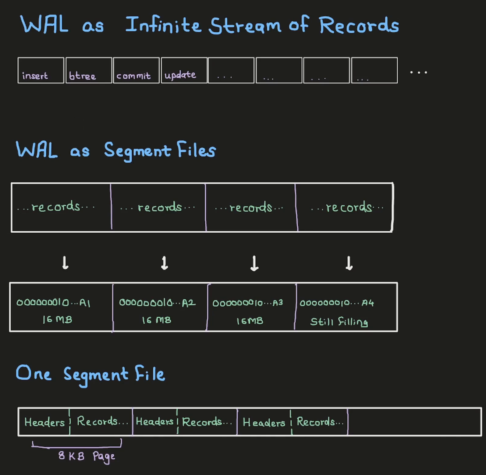

We all know that Postgres has a write-ahead log ( WAL ) for recovery and replication. We probably also know how to configure it, or how to set up replication with it. But we rarely look at what the WAL is actually made of, or how a record gets written into it.
So in this post, we’ll do that. We’ll insert a single row, find its WAL record on disk, and then go through the Postgres source to see who wrote that record and how it gets replayed. It’ll be easier to follow if you know how Postgres organizes its storage. I covered that in an earlier post.
Prefer video? Here’s the same walkthrough:
How the WAL is laid out
A write-ahead log is an infinite, append-only stream of records. For the tables we normally use, every change is recorded in the WAL: an insert, an update, a change to an index. Each of them produces a WAL record. And once a record is logged, it is immutable.
But we can’t write an infinite stream to disk as a single file. So Postgres breaks the stream into chunks, and each chunk is a file on disk. These chunks are called segments, and each segment is 16MB by default.
Each segment is again split into pages of 8KB each. Every page starts with some headers ( things like the timeline ID and some flags ), followed by the actual WAL records.

Two small details here. The first page of a segment has a few more headers than the rest: the system identifier, the segment size, and the WAL page size. And a WAL record can cross a page boundary. So every page header has a flag that tells Postgres whether the start of this page is a continuation of a record from the previous page.
Each record also gets a Log Sequence Number ( LSN ). It’s a 64-bit number that keeps increasing and is unique for every record. We don’t need to worry about how Postgres generates it. What matters for us is that the LSN tells us where a record lives. If we know the LSN of an INSERT record, we can find that record and read its details. Without the LSN, finding it is possible, but quite hard.
So let’s find one.
Prerequisites
I’m using the same postgres 17.6 container as the earlier posts. The Dockerfile is on GitHub.
docker build -t postgres-17.6:v1 .
docker network create pgnet
docker run -d --name postgres --network pgnet -e POSTGRES_PASSWORD=secret postgres-17.6:v1I keep two terminals open: one running psql, and one with a shell inside the container for looking at the files.
Finding our INSERT in the WAL
This is a freshly created container, so nothing has happened in it yet. But Postgres has already set up its WAL and has a current LSN. We can get it with pg_current_wal_lsn():
SELECT pg_current_wal_lsn() AS lsn_before_any_activity \gset
\echo LSN before any activity: :lsn_before_any_activityLSN before any activity: 0/195A318\gset stores the result in a psql variable so we can reuse it later. It also hides the output, which is why there’s an \echo after it.
Now let’s create a table and save the LSN again. Then insert one row and save it once more:
CREATE TABLE users (id integer, name text, email text);
SELECT pg_current_wal_lsn() AS lsn_after_creating_table \gset
\echo LSN after creating table: :lsn_after_creating_table
INSERT INTO users VALUES (1, 'Alice', 'alice@example.com');
SELECT pg_current_wal_lsn() AS lsn_after_inserting_a_tuple \gset
\echo LSN after INSERT: :lsn_after_inserting_a_tupleLSN after creating table: 0/19773B0
LSN after INSERT: 0/1977468So we now have three LSNs: one before the CREATE TABLE, one between the CREATE TABLE and the INSERT, and one after the INSERT. The records we’re interested in are somewhere between them.
Everything Postgres stores lives in its data directory:
SHOW data_directory; data_directory
--------------------------
/var/lib/postgresql/dataIn the other terminal, the WAL is in the pg_wal directory inside it:
docker exec -it postgres bash
cd /var/lib/postgresql/data/pg_wal
ls000000010000000000000001 archive_status summariesThere’s only one segment file, since this is a fresh instance. A busy system will have many more. To find out which segment an LSN belongs to, and where inside that file it is, Postgres has pg_walfile_name_offset:
SELECT pg_walfile_name_offset(:'lsn_before_any_activity'); pg_walfile_name_offset
------------------------------------
(000000010000000000000001,9806616)It gives us the segment file’s name and the byte offset inside it. Doing the same for the other two:
SELECT pg_walfile_name_offset(:'lsn_after_creating_table');
SELECT pg_walfile_name_offset(:'lsn_after_inserting_a_tuple'); (000000010000000000000001,9925552)
(000000010000000000000001,9925736)How does it compute this? The LSN itself carries this information. With 16MB segments, the upper bits of the LSN give the segment number, and the lower 24 bits are the byte offset inside that segment. For example, 0/19773B0 is segment 1, offset 0x9773B0, which is 9925552.
The two offsets around the CREATE TABLE are far apart, so that range has a lot of data. The two around our INSERT are only 184 bytes apart. Let’s dump those bytes with xxd:
xxd -s 9925552 -l "$((9925736 - 9925552))" ./000000010000000000000001009773b0: 3200 0000 0000 0000 486f 9701 0000 0000 2.......Ho......
009773c0: 1008 0000 9780 5a82 ff18 0000 0000 0000 ......Z.........
009773d0: 0000 00b9 3901 f102 0000 f102 0000 f002 ....9...........
009773e0: 0000 0000 0000 0000 5300 0000 f102 0000 ........S.......
009773f0: b073 9701 0000 0000 800a 0000 6f26 a7d3 .s..........o&..
00977400: 0060 2200 7f06 0000 0500 0000 0640 0000 .`"..........@..
00977410: 0000 0000 ff03 0300 0208 1800 0100 0000 ................
00977420: 0d41 6c69 6365 2561 6c69 6365 4065 7861 .Alice%alice@exa
00977430: 6d70 6c65 2e63 6f6d 0100 0000 0000 0000 mple.com........
00977440: 2200 0000 f102 0000 e873 9701 0000 0000 "........s......
00977450: 0001 0000 6352 4a9d ff08 2f2b f9c2 59fe ....cRJ.../+..Y.
00977460: 0200 0000 0000 0000 ........We can already see Alice and alice@example.com in there. We could try to read the rest byte by byte, like we did for the table pages in the earlier post. But Postgres ships a tool that does it for us, pg_waldump. It takes LSNs, not byte offsets:
pg_waldump -s 0/19773B0 -e 0/1977468rmgr: Standby len (rec/tot): 50/ 50, tx: 0, lsn: 0/019773B0, prev 0/01976F48, desc: RUNNING_XACTS nextXid 753 latestCompletedXid 752 oldestRunningXid 753
rmgr: Heap len (rec/tot): 83/ 83, tx: 753, lsn: 0/019773E8, prev 0/019773B0, desc: INSERT+INIT off: 1, flags: 0x00, blkref #0: rel 1663/5/16390 blk 0
rmgr: Transaction len (rec/tot): 34/ 34, tx: 753, lsn: 0/01977440, prev 0/019773E8, desc: COMMIT 2026-09-13 10:43:50.075183 UTCOne SQL statement produced three WAL records. A more complicated statement could produce many more.
- The first one belongs to the Standby resource manager. It describes the transactions running at that moment. We don’t need it here.
- The second one is our insert. It comes from the Heap resource manager.
INSERT+INITmeans Postgres inserted the tuple and also initialized a new heap page in the same record, since this is the first row in the table. - The third one is the Transaction resource manager’s
COMMIT, because the insert ran inside a transaction.
If we did the same for the CREATE TABLE, we’d see many more records, mostly for the system catalogs it updates.
The Heap record starts at LSN 0/019773E8, offset 0x9773E8 in the dump. Its 83 bytes are:
| Bytes | Field | Value |
|---|---|---|
5300 0000 |
xl_tot_len |
83 bytes |
f102 0000 |
xl_xid |
transaction 753 |
b073 9701 0000 0000 |
xl_prev |
0/019773B0, the Standby record before it |
80 |
xl_info |
XLOG_HEAP_INSERT with XLOG_HEAP_INIT_PAGE |
0a |
xl_rmid |
10, the Heap resource manager |
0000 |
padding | |
6f26 a7d3 |
xl_crc |
checksum |
00 60 2200 |
block header | block 0, will init the page, has 34 bytes of data |
7f06 0000 0500 0000 0640 0000 |
relation | 1663 / 5 / 16390 |
0000 0000 |
block number | 0 |
ff 03 |
main data header | 3 bytes of main data |
0300 0208 18 |
xl_heap_header |
3 columns, infomask 0x0802, header size 24 |
00 |
padding up to t_hoff |
|
0100 0000 |
id |
1 |
0d 416c696365 |
name |
'Alice' |
25 616c69636540... |
email |
'alice@example.com' |
0100 00 |
xl_heap_insert |
offset 1, flags 0x00 |
These are the same pieces we’ll see being registered in heap_insert below.
So these are the WAL records for the operations we ran. But what is a “resource manager”, and how do we interpret these records?
Resource managers
Let’s pretend for a moment that we’re writing the WAL code for Postgres. Different operations need to log different things. An INSERT record needs enough information to rebuild the tuple and the heap page it went into. A CREATE TABLE record, on the other hand, needs to know about the physical file that was created for the table.
So every record has the same fixed header, with things like the transaction ID and the LSN of the previous record. What comes after the header, let’s call it the payload, is different for every operation.
How would we design this? We’d keep a registry, say an array. In it, we’d register a “resource manager” for each kind of operation. Each resource manager has a name and implements a set of functions: how to replay its records during recovery, how to describe them, and so on. In Rust we’d do this with trait objects. In Java, with interfaces. In C, with function pointers.
And that’s what Postgres does. The registry is an array called RmgrTable, and each resource manager in it is a struct called RmgrData.
In the source code
All links below are to the REL_17_6 tag.
The fixed header is the XLogRecord struct in xlogrecord.h. This is the 24-byte header every WAL record starts with:
typedef struct XLogRecord
{
uint32 xl_tot_len; /* total len of entire record */
TransactionId xl_xid; /* xact id */
XLogRecPtr xl_prev; /* ptr to previous record in log */
uint8 xl_info; /* flag bits, see below */
RmgrId xl_rmid; /* resource manager for this record */
/* 2 bytes of padding here, initialize to zero */
pg_crc32c xl_crc; /* CRC for this record */
/* XLogRecordBlockHeaders and XLogRecordDataHeader follow, no padding */
} XLogRecord;The comment above it describes the full layout of a record: the fixed header, then a header for each block ( page ) the record touches, then the data for those blocks, and finally the “main data” that belongs to the resource manager.
The registry, RmgrTable, is in rmgr.c:
#define PG_RMGR(symname,name,redo,desc,identify,startup,cleanup,mask,decode) \
{ name, redo, desc, identify, startup, cleanup, mask, decode },
RmgrData RmgrTable[RM_MAX_ID + 1] = {
#include "access/rmgrlist.h"
};Its entries come from rmgrlist.h. That’s where all the resource managers are listed, including the Heap, Standby and Transaction ones we saw in pg_waldump. The Heap entry looks like this:
PG_RMGR(RM_HEAP_ID, "Heap", heap_redo, heap_desc, heap_identify, NULL, NULL, heap_mask, heap_decode)Each entry fills in an RmgrData, which is mostly function pointers:
typedef struct RmgrData
{
const char *rm_name;
void (*rm_redo) (XLogReaderState *record);
void (*rm_desc) (StringInfo buf, XLogReaderState *record);
const char *(*rm_identify) (uint8 info);
void (*rm_startup) (void);
void (*rm_cleanup) (void);
void (*rm_mask) (char *pagedata, BlockNumber blkno);
void (*rm_decode) (struct LogicalDecodingContext *ctx,
struct XLogRecordBuffer *buf);
} RmgrData;Every resource manager implements its own versions of these functions, and the WAL machinery calls them through these pointers. That’s roughly the design we had in mind.
Writing the record: heap_insert
Now let’s follow our INSERT. Every row inserted into a regular table goes through heap_insert in heapam.c. While reading it, keep in mind that all of this is for recovery. Whatever gets logged here is what the redo function will use to recreate the change.
Before any WAL is written, heap_insert does a few other things. It prepares the tuple ( fills in the header fields, and TOASTs it if a value is too long ), finds a page with enough room for it, and handles some conflict checks and the visibility map.
Then the WAL part starts. First, there’s a small check:
if (ItemPointerGetOffsetNumber(&(heaptup->t_self)) == FirstOffsetNumber &&
PageGetMaxOffsetNumber(page) == FirstOffsetNumber)
{
info |= XLOG_HEAP_INIT_PAGE;
bufflags |= REGBUF_WILL_INIT;
}If this tuple is the first and only one on the page, the record gets the INIT flag. That’s the +INIT we saw in pg_waldump. During recovery, it tells Postgres that this is a fresh page, so it can just create a new page and put the tuple in it. Otherwise, Postgres would have to read the existing page first and then insert into it.
After that, logging the record takes four steps ( L2167–L2189 ):
XLogBeginInsert();
XLogRegisterData((char *) &xlrec, SizeOfHeapInsert);
...
XLogRegisterBuffer(0, buffer, REGBUF_STANDARD | bufflags);
XLogRegisterBufData(0, (char *) &xlhdr, SizeOfHeapHeader);
XLogRegisterBufData(0,
(char *) heaptup->t_data + SizeofHeapTupleHeader,
heaptup->t_len - SizeofHeapTupleHeader);
...
recptr = XLogInsert(RM_HEAP_ID, info);XLogBeginInsert()checks whether we’re allowed to write WAL at all. For example, a replica that is replaying WAL can’t write WAL records of its own.XLogRegisterData()registers the “main” data of the record. For the Heap insert, that’s a tiny struct,xl_heap_insert: the offset of the slot on the page the tuple went into, and some flags. These are theoff: 1, flags: 0x00in thepg_waldumpoutput.XLogRegisterBuffer()registers the in-memory page we modified. From it, Postgres works out the tablespace, database, relation file and block number. That’s therel 1663/5/16390 blk 0inpg_waldump. During replay, this tells Postgres which page on disk to change.XLogRegisterBufData(), called twice, attaches data to that page. The first call registers the tuple’s header, and the second registers the tuple data itself. This is where our row ends up in the WAL.
Finally, XLogInsert assembles everything that was registered into one record, in the right order. It computes the checksum, stamps the resource manager’s ID on the record, and copies it into the WAL buffers, from where it’s written to pg_wal. It returns the record’s LSN.
Replaying the record: heap_redo
All of this was so the change can be replayed during recovery. For the Heap resource manager, that’s heap_redo. It’s a simple switch on the record type:
switch (info & XLOG_HEAP_OPMASK)
{
case XLOG_HEAP_INSERT:
heap_xlog_insert(record);
break;
case XLOG_HEAP_DELETE:
heap_xlog_delete(record);
break;
case XLOG_HEAP_UPDATE:
heap_xlog_update(record, false);
break;
...
}heap_xlog_insert does the reverse of what we saw in heap_insert. It takes the WAL record and redoes the insert on the same page, in the same slot. And here’s the INIT flag being used ( L9638–L9646 ):
if (XLogRecGetInfo(record) & XLOG_HEAP_INIT_PAGE)
{
buffer = XLogInitBufferForRedo(record, 0);
page = BufferGetPage(buffer);
PageInit(page, BufferGetPageSize(buffer), 0);
action = BLK_NEEDS_REDO;
}
else
action = XLogReadBufferForRedo(record, 0, &buffer);So for one INSERT, the Heap resource manager handles everything: heap_insert writes the record, and heap_redo replays it during recovery.
Summary
- The WAL is an infinite stream of records, split into 16MB segment files, which are further split into 8KB pages.
- Every record can be located by its LSN. Each record has a fixed header, followed by a payload specific to that operation.
- Resource managers define what goes in the payload, how to replay it, and how to decode it. They are registered in
RmgrTable. - Tools like
pg_waldumplet us read the WAL in a human-readable form.
What I left out
- Full-page images. After every checkpoint, the first change to a page writes the entire 8KB page into the WAL, to protect against torn pages.
- Redo is safe to repeat. Replaying a record on a page that already has the change does nothing. The page’s LSN tells Postgres whether the change is already there.
wal_levelchanges what gets logged. Underwal_level = logical, the INSERT record gets an extra flag (0x08) and always keeps the tuple data, so logical decoding can read it.- Indexes write their own records. An insert into a table with an index also produces records from the index’s resource manager ( for example, Btree ), separate from the Heap record.
Credits and Resources
- WAL Internals, PostgreSQL docs
- pg_waldump, PostgreSQL docs
- The transam README in the postgres source
- Postgres Source Code